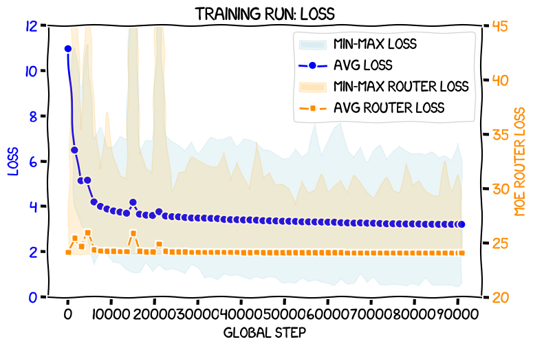
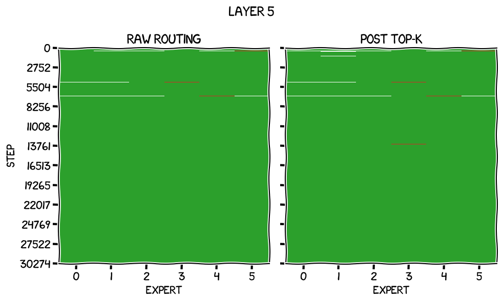
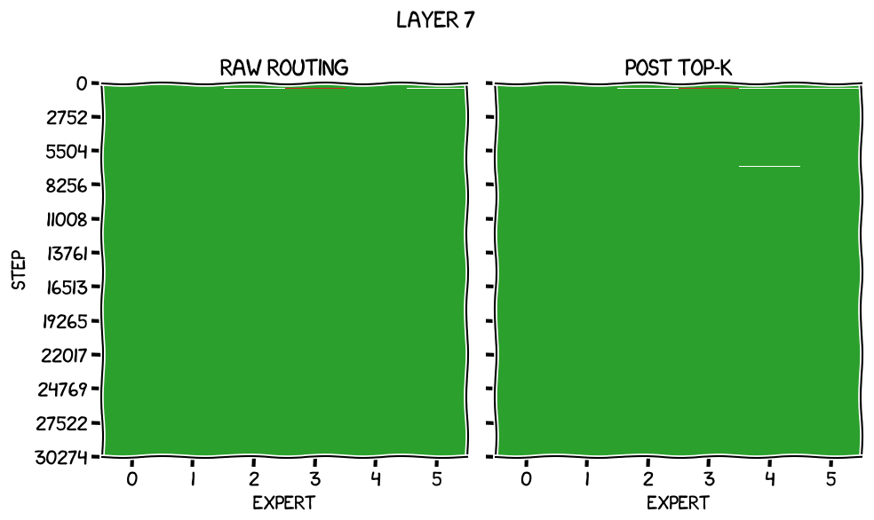
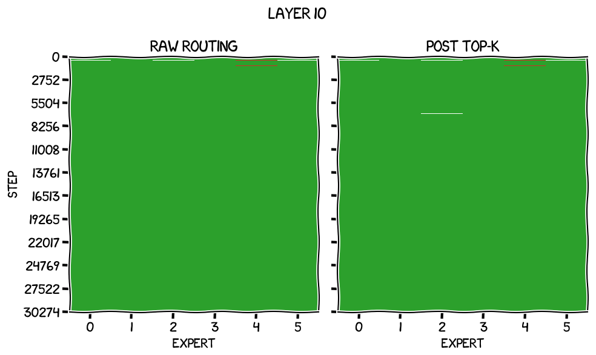
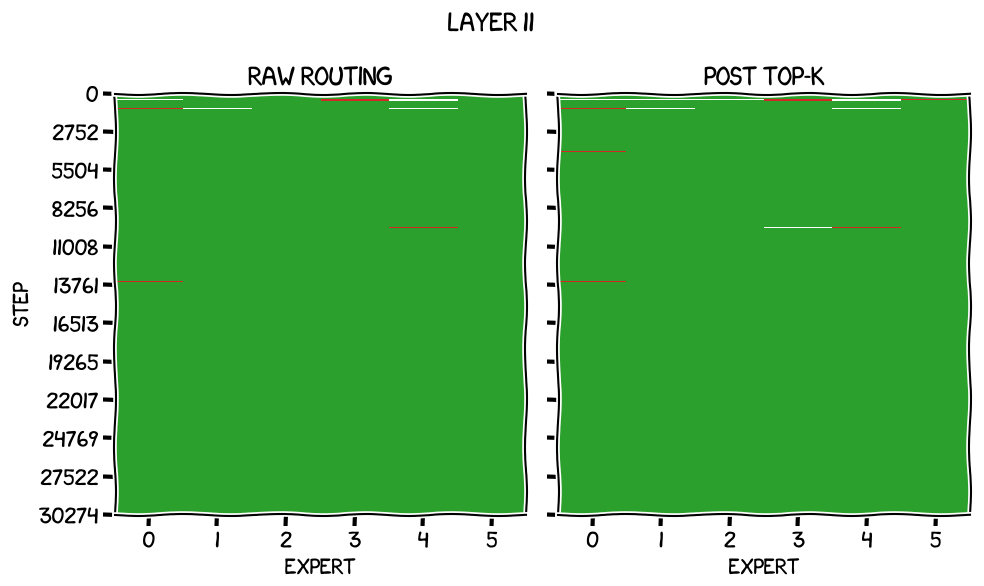

这是「从GPT-2到MoE」系列的最后一篇，也是收尾：8.9B token、八天、90,823个global step，把6专家激活2个的MoE真正训完。
训练效果、与GPT-2 small/medium的对比、IFT评测排名，以及作者对后续实验的想法都在这一篇。文末附上四篇关键论文的正式引用，以及作者对路由方案取舍的详细脚注。
我决定不去纠结训练多少token合适。Chinchilla的「参数量20倍」是针对密集模型的启发式，并不适用于MoE。直觉上，一个总参数446,410,752、每token激活219,697,152的模型，「理想」token数应该落在两个参数量各自的Chinchilla最优点之间。
但过度训练本身不一定是坏事，只要数据不重复，或者说同一份数据不超过四个epoch，而我之前那次实验已经准备好一份10B token的数据集。所以按「如果它只是一个446M参数密集模型」的Chinchilla最优token数来训，听起来不坏，只要时间可接受。
那意味着8,928,215,040个token，用我常规的训练数据集就能覆盖，不需要多轮epoch。
快速确认了一下：按这个token数配置训练脚本，需要90,823个global step，大约八天。
每个检查点看起来要占5.3GiB，而我的磁盘还有约348GiB空闲，所以算下来可以每1,500个global step存一次，大约三小时一次。不算理想，但断电，或者猫跳上电源键，最多损失三小时的工作，也不至于世界末日。
于是我按这份模型配置和训练配置准备好，在专用训练机poppy上启动：
giles@poppy:~/Dev/ddp-base-model-from-scratch (main)$ uv run torchrun --nproc_per_node=1 ddp_train.py 1xrtx3090-moe-first-proper-run datasets/
Fetching 4 files: 100%|██████████| 4/4 [00:00<00:00, 3517.97it/s]
moe_router_loss_scale=0.005
Starting rank 0 training at global step 0
0%| | 0/90823 [00:07<?, ?it/s, loss=10.963, tps=12,635]
Checkpoint
Continuing training
0%| | 155/90823 [19:32<190:23:52, 7.56s/it, loss=7.407, tps=12,999]不到八天后，它跑完了：
100%|██████████| 90823/90823 [190:13:38<00:00, 7.54s/it, loss=3.377, tps=13,040]
Training complete in 684,818.520 seconds
Tokens seen: 8,928,264,192
Throughput: 13,037 tokens/second
Final train loss: 3.211损失曲线长这样：

可以看到，普通的交叉熵损失，图上就标着loss，从随机的约10.82（GPT-2分词器）平滑下降到最后的训练损失3.211，中间只有几处很小的尖峰。
我还在右侧Y轴画了MoE路由的辅助损失：一开始有几个鼓包，单次迭代的最大值偶尔会飙一下，但平均值总体贴着24这个「理想值」。最后一个检查点上，所有迭代的平均值是几乎完美的24.0847。
我画逐层「专家饥饿与过载」的notebook也回来了，一片漂亮的绿色，说明路由很均匀：




训练刚开始时有点小问题，但后75% 全是绿色的海洋，很漂亮。
我跑了常规的冒烟测试，来自书里Raschka那个：让模型用20个token、温度1补全「Every effort moves you」，会得到什么？
Every effort moves you closer towards your goals and the results. But the good news is that you are more likely to get相当连贯。是时候做些评测和对比了。
我跑了常规的损失评测：在19,200条、每条1,024 token的留出测试集上，模型的平均损失是多少？
giles@perry:~/Dev/ddp-base-model-from-scratch (main)$ uv run test_loss.py datasets/ runs/1xrtx3090-moe-first-proper-run/model.json runs/1xrtx3090-moe-first-proper-run/checkpoints/latest/model.safetensors
Fetching 4 files: 100%|██████████| 4/4 [00:00<00:00, 1515.56it/s]
100%|██████████| 3200/3200 [05:41<00:00, 9.38it/s]
Loss against our test dataset: 3.253928把它和我训练过的其他模型、以及OpenAI的GPT-2 small与medium权重对比，得到这张表，我们的模型在表中加粗：
| 模型 | 参数量 | 测试损失 |
|---|---|---|
| OpenAI权重：medium | 345M | 3.231442 |
| PyTorch MoE，6专家，每token激活2个 | 446M/220M | 3.253928 |
| JAX，过训练一个长epoch | 163M | 3.324953 |
| JAX，过训练两个常规epoch | 163M | 3.326482 |
| JAX，带MHA bias，无dropout | 163M | 3.418784 |
| JAX，无MHA bias，无dropout | 163M | 3.420089 |
| JAX，无MHA bias，带dropout | 163M | 3.476802 |
| OpenAI权重：small | 124M | 3.499677 |
| 1xrtx3090-stacked-interventions | 163M | 3.538161 |
| 8xa100m40-stacked-interventions-1 | 163M | 3.577761 |
| Cloud FineWeb, 8x A100 40 GiB | 163M | 3.673623 |
| 1xrtx3090-baseline | 163M | 3.683835 |
| 8xa100m40-baseline | 163M | 3.691526 |
| Cloud FineWeb, 8x H100 80 GiB | 163M | 3.724507 |
| Cloud FineWeb, 8x A100 80 GiB | 163M | 3.729900 |
| Cloud FineWeb, 8x B200 160 GiB | 163M | 3.771478 |
| Local FineWeb train | 163M | 3.943522 |
| Local FineWeb-Edu extended train | 163M | 4.134991 |
| Local FineWeb-Edu train | 163M | 4.166892 |
这个成绩不算差，也谈不上惊艳。它比我所有163M参数的模型和OpenAI的GPT-2 small都好，但比OpenAI的345M参数GPT-2 medium略差、很接近，而后者参数量更少，只是每token激活的更多。
我决定再做一次评测。我有一个叫IFT测试的流程：把模型在一个指令跟随数据集上微调，直到它在留出集上的损失开始上升为止，然后跑一个测试集，看模型对没见过的提问给出什么回答。接着我把来自多个模型的回答打包，交给GPT 5.5做比较。它是对书里第七章Raschka那个例子的扩展，改成更容易横向比较不同模型。
脚本在这里和这里，更多细节在这里。
我启动第一个脚本做微调并拿到回答，然后连同其他模型的回答一起交给LLM比较。结果如下，按损失排序，IFT rank一列是它在评测里的相对名次：
| 模型 | 测试损失 | IFT epochs | IFT得分 | IFT名次 |
|---|---|---|---|---|
| OpenAI权重：medium | 3.231442 | 2 | 42.54 | 1 |
| PyTorch MoE，6专家，每token激活2个 | 3.253928 | 4 | 22.71 | 3 |
| JAX，过训练一个长epoch | 3.324953 | 3 | 18.71 | 6 |
| JAX，过训练两个常规epoch | 3.326482 | 4 | 19.14 | 5 |
| JAX，带MHA bias，无dropout | 3.418784 | 4 | 18.40 | 7 |
| JAX，无MHA bias，无dropout | 3.420089 | 5 | 20.83 | 4 |
| JAX，无MHA bias，带dropout | 3.476802 | 5 | 13.04 | 16 |
| OpenAI权重：small | 3.499677 | 2 | 24.95 | 2 |
| 1xrtx3090-stacked-interventions | 3.538161 | 4 | 13.30 | 15 |
| 8xa100m40-stacked-interventions-1 | 3.577761 | 4 | 10.33 | 19 |
| Cloud FineWeb, 8x A100 40 GiB | 3.673623 | 3 | 16.62 | 8 |
| 1xrtx3090-baseline | 3.683835 | 4 | 15.20 | 10 |
| 8xa100m40-baseline | 3.691526 | 3 | 14.15 | 11 |
| Cloud FineWeb, 8x H100 80 GiB | 3.724507 | 4 | 13.76 | 14 |
| Cloud FineWeb, 8x A100 80 GiB | 3.729900 | 3 | 10.98 | 18 |
| Cloud FineWeb, 8x B200 160 GiB | 3.771478 | 4 | 14.07 | 13 |
| Local FineWeb train | 3.943522 | 5 | 12.45 | 17 |
| Local FineWeb-Edu extended train | 4.134991 | 5 | 14.11 | 12 |
| Local FineWeb-Edu train | 4.166892 | 5 | 15.49 | 9 |
可以看到，损失和这个评测上的表现之间的相关性松得很有意思，我有一个还在写的系列在试着弄清原因。特别地，OpenAI的权重总是比我的好，我很想找出原因。
不过至少让人安心的是：这个新的、更大的模型排在第3，赢过了我自己其他所有模型，虽然还是输给了那个讨厌的124M参数GPT-2 small。
所以就这样：一个GPT-2 small被改成每层6个专家、每token激活2个的MoE。它在测试集上的损失基本符合预期，IFT评测也说得通，除了OpenAI权重那个奇怪现象。
那这意味着什么，接下来该做什么？
这篇里，我从《Build a Large Language Model (from Scratch)》的GPT-2代码和我自己的训练脚本出发，后者最初也是基于书里的训练代码，加上了混合专家支持，包括让专家之间合理均衡负载所必需的辅助损失计算。八天训练之后，我们得到一个还不错、有能力的模型。
从智力上说，这挺让人满足的；至少从测试损失看，它基本落在你会预期的地方。而我很确定的一件事是：把这一串计算啃下来，对我的PyTorch和张量操作能力是一次极好的锻炼。
但MoE真正有意思的地方在于，它在理论上能以更低的推理算力提供和密集模型相近的性能。
我觉得接下来还能做一些有意思的后续实验。OpenAI的权重总是打败我的，所以如果先把它们排除在比较之外，直到我弄明白原因，我可以试着建立一个心智模型：在学习LLM的过程中，MoE是不是一种划算的算力用法。我可以：
用和这次MoE相同的算力训练一个小模型，比如我一直在折腾的163M规模，看它会表现如何。我猜会更差。
用相同算力训练一个446M参数的密集模型，看它比得怎么样。它会训练不足，因为每个token需要的计算更多，算力相同时我只能用更少的token训练它。我不知道它更好还是更差。
用相同算力训练一个Chinchilla最优的密集模型，看结果如何。
肯定还有别的选项，我也很想知道大家还能想到什么。
总之，希望这篇文章是一次有意思的旅程，也把事情讲清楚了。非常欢迎反馈，尤其是关于那些图有没有帮助。我最近才给自己的静态站点生成器加上D2支持，完全有可能是我在滥用新玩具。
所以，感谢阅读，一如既往，欢迎在评论区提出意见和问题。
为了防止链接失效，我把这些论文的正式引用放在这里，它们是重要的背景：Jacobs, Jordan, Nowlan, Hinton (1991). Adaptive Mixtures of Local Experts. Neural Computation 3(1), 79到87。Shazeer等 (2017). Outrageously Large Neural Networks: The Sparsely-Gated Mixture-of-Experts Layer. ICLR 2017。Lepikhin等 (2021). GShard: Scaling Giant Models with Conditional Computation and Automatic Sharding. ICLR 2021。Fedus, Zoph, Shazeer (2022). Switch Transformers: Scaling to Trillion Parameter Models with Simple and Efficient Sparsity. JMLR 23(120), 1到39。
从实现上说，Mixtral有点怪。它用了Switch Transformers那个「先softmax再把非top-k置零」的技巧，但接着又把得到的路由权重按它们的和做归一化，也就是每个值除以那个小于1的和。这么做的净效果，和《Outrageously Large Neural Networks》里「把非top-k替换成负无穷」完全一样。
还有一点：把非top-k之外的专家全部掩掉这件事让我有点怀疑。它隐约有点像我最早那种「死路」代码：路由器的输出没有用来给最终结果加权。而且看起来确实存在实打实的数学隐忧，虽然不完全一样。《Outrageously Large Neural Networks》里说：「虽然这种稀疏形式会在门控函数的输出上造成一些理论上吓人的不连续，实践中我们还没有观察到它成为问题。」我的直觉是：因为权重在计算流里，反向传播仍然可以试着降低一个本不该被用到的专家的权重。不过这也有点麻烦，因为受softmax影响，降低一个专家的权重会迫使其他专家的权重升高，softmax的结果必须和为1。考虑下来，我觉得Switch Transformers那种先softmax再掩码的方案更好：未选中专家的权重对反向传播是「不可见」的，而提高某个选中专家权重的梯度会自动降低其他所有未选中专家的权重，反之亦然。这一点我还得再想想，也许用Switch式的设置再训一次做对比。还有个随机的想法：先softmax的做法会让被选中专家的权重比原本更低，于是FFN加进上下文向量的信号变少，但也许FFN会被训练成输出更大的值。总之先放一边。
我试过的另一个方案能跑通，但有一个不明显的bug。假设某个上下文向量的logits是 [0.4254, 0.1342, 0.5106, -0.1385]，两个激活专家时我们想把它变成 [0.4254, -inf, 0.5106, -inf]。默认情况下topk会按降序排列数值，并保持对应的下标顺序，所以top-2值是 [0.5106, 0.4254]。如果按「把所有小于top-k中最小值的logits替换成负无穷」来做，看起来挺巧妙。但并列会出问题：假设这个上下文向量的logits是 [0.4254, 0.4254, 0.5106, -0.1385]，最小的top-2值当然是0.4254，可一旦把所有小于0.4254的值替换成负无穷，就会得到 [0.4254, 0.4254, 0.5106, -inf]，也就是三个激活专家而不是两个。这不行。虽然我认为实践中撞上这个问题的概率不高，但它确实是明确的错误，必须解决，于是有了我最终采纳的方案。
想象一个极端情况：256个专家、每token激活一个。在一个batch里，token基本会随机散落在各个专家上，所以你几乎要把所有专家都跑一遍。如果每个专家只用GPU的一小部分算力处理分给它的那点token，而你一次只处理一个专家，GPU利用率会严重不足。不过以我用的模型规模与激活、总专家数，这不是问题，等全部跑起来后nvtop也证实了。真正很大的模型还会有另一个问题：一个batch里可能有太多东西挤到同一个专家上。虽然我们后面会加代码保证平均而言每个专家收到的上下文向量数量差不多，但在单个batch内部仍可能不均衡。想象一个巨大到需要不同GPU、甚至不同机器来承载不同专家的LLM，比如万亿参数量级：如果你的batch里大部分上下文向量都落在专家i上，它所在的那块GPU就成了瓶颈。我在这篇里描述的这种设置有时叫「token选择」路由，某种意义上每个token选择了它「想」去的专家，或者说路由器替它选了。「专家选择」路由则反过来：生成同样的logits，但不在每个token上选top-k专家，而是在每个专家上选top-k token，从而保证专家之间的均衡。这两条都值得将来研究。
这是一篇博客，想链接的话请随意。但如果你在写更学术的东西、需要正式引用，这里有个BibTeX块：
@misc{thomas2026sep-gpt-2-to-moe,
author = {Thomas, Giles},
title = {{Extending Raschka's GPT-2: an MoE trained from scratch on an RTX 3090}},
year = {2026},
month = sep,
howpublished = {Blog post},
url = {https://www.gilesthomas.com/2026/09/gpt-2-to-moe},
}参考：https://www.gilesthomas.com/2026/09/gpt-2-to-moe